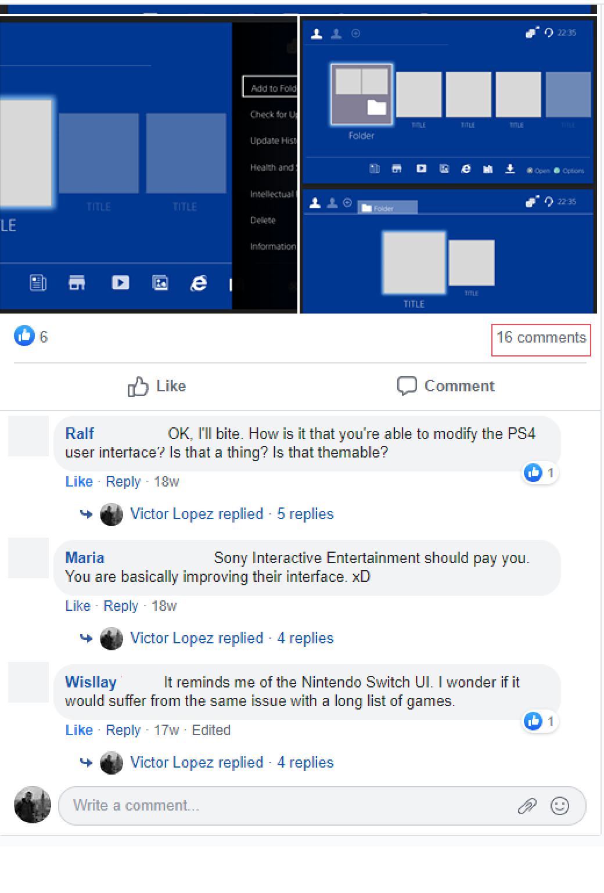

Why the PS4?
The Playstation 4 is the most relevant console in the gaming industry, and with the new Playstation 5 close launch I wondered what changes could be done to the UI to not only improve the horse power of the machine but also to make it even easier to use.
I decided to get in touch with Playstation 4 Users and asked them to let me know about what changes could be done to improve its usability, as I wanted to know from them the exact pain points they suffered when using the UI.
Technologies and Resources used for this project:
Since I have not used the PS4 as much as I used its predecessors it was clear to me that I needed to gather as much feedback as possible.
Due to time constraints - I had only two weeks to finish this project - I decided that the best research methods would be qualitative.
8 Users were interviewed and I received around 30 comments on a Gaming group where I posted asking them for their experiences with the PS4 OS - ORBIS.

If you would like to, you can check this and review the most relevant notes from the research.
In case you have checked my notes, you will see that I labeled each proposal from users with an S, M, or L. This letters stand for Small, Medium or Large and allowed me to discard those proposals that were impossible to complete.
Thanks to all of this wonderful feedback, I decided to tackle the following issues:
- Game Centered UI instead of the actual Multimedia Center.
- Multi Profile Feature on the fly. Now you need to go through multiple screens just to swap profiles.
- Changes in the information architecture. Sections such as Downloads are difficult to find.
Wireframes
Having a clear point on where to start, I was greatly inspired with the Switch UI to create a more user friendly interface.
I was lucky enough to find the Sony PS4 Styleguide, which I applied.
Games are now centered, allowing users to launch them without hesitation.
Moreover, Users can use the left stick to navigate through the top menu, focused on Social and User profiles; a Gaming section with all of the user's games and a bottom menu, focused on Multimedia Apps and System.
As a UX Designer, it was challenging to design a UI without being able to test with proper controller mapping. Despite this, I went on and tested my prototype with 5 users.
First Feedback
After testing the first prototype it was clear that I still had to:
Minor changes to the UI to differentiate it from the Switch UI.
Redistribute the lower Menu and make it easier to use.
Additionally, I kept asking for feedback to my beloved friends in the Gaming group, receiving wonderful compliments and feedback.

I was now ready to create and animate the High Fidelity Prototype.
Animated Prototype
Since I was lucky enough to find the Sony PS4 Styleguide, I decided to fully commit to make my prototype look as legit as possible. To achieve this, I draw the icons exactly the same as the PS4.
Additionally I wanted users to have a good idea of how the final product would look and work, therefore I decided to fully animate the prototype with After Effects.
I was able to find a good mockup with the Dualshock 4 controller, and I also animated the controller mapping.
Finally, I decided to also add to the animation all the sounds of the PS4 UI. As you can imagine, my composition in After Effects was heavy, and I decided to use Premiere Pro to finish some details.